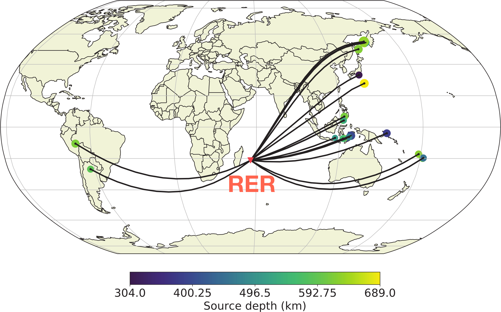

Seismological investigation of melt retention in the upper mantle underneath La Réunion
Thijs Franken, John Armitage, Nobu Fuji, and Alexandre FournierMelt storage in the zone of partial melting
The East Pacific Rise, Pacific Ocean
The East Pacific Rise, Pacific Ocean
The East Pacific Rise, Pacific Ocean
Afar, Africa
Afar, Africa
La Réunion
 Joint RF and surface wave disspersion [Fontaine et al., GJI, 2015]
Joint RF and surface wave disspersion [Fontaine et al., GJI, 2015]
La Réunion - teleseismic arrivals
La Réunion - teleseismic arrivals
Lets do things differently
Solve for melt production and transport
- Calculate the transport of melt through a porous medium.
- We need a relationship between melt porosity and permeability.
- This allows a continuity equation to be written.
Modified Darcy's law to relate average and melt velocity: $$ v_{l} - v = \left(1 - \phi\right)\frac{k}{\phi \eta_{l}} \Delta\rho g $$
Permeability closure equation: $$ k = k_{0}\phi^{3} $$
Conservation of mass (melt): $$ -m + \partial_{t}\phi + v\partial_{z}\phi + \frac{k_{0}\Delta\rho g}{\eta_{l}} \phi^{2}\left(1-\frac{4}{3}\phi\right)\partial_{z}\phi = 0$$
Solve equations in 1D: $u = 10\rm\,m\,yr^{-1}$ and $T_{base} = 1450\rm\,^{\circ}C$
Solve equations in 1D: $u = 10\rm\,m\,yr^{-1}$ and $T_{base} = 1450\rm\,^{\circ}C$
Solve equations in 1D: $u = 10\rm\,m\,yr^{-1}$ and $T_{base} = 1450\rm\,^{\circ}C$
Solve equations in 1D: $u = 10\rm\,m\,yr^{-1}$ and $T_{base} = 1450\rm\,^{\circ}C$
Solve equations in 1D: $u = 10\rm\,m\,yr^{-1}$ and $T_{base} = 1450\rm\,^{\circ}C$
Parammeter space
$$ 1250{\rm\,^{\circ}C} \leq T_{base} \leq 1500{\rm\,^{\circ}C} $$$$ 10^{-9}{\rm\,m^{2}} \leq k_{0} \leq 10^{-5}{\rm\,m^{2}} $$
$$ 10{\rm\,mm\,yr^{-1}} \leq u \leq 70{\rm\,mm\,yr^{-1}} $$
Converstion to seismic velocity
Converstion to seismic velocity
Wave propagation
We use DMS (??) top propagate waves through the model space
SKS arrival through model space
210 model scenariosCross-correlation to get travel time difference, $\Delta t$
210 model scenarios$\Delta t$ and best fit model
Large trave time differnce requires low perosities.L2 and best fit model
Minimum missfit (ignoring travel delay) suggests low melt retentionComparison to inversions
Joint RF and surface wave inversion [Fontaine et al.,2015]Waveform through inversion
Waveform through inversion
Comparison between best fit models and the inversion
Waveforms of best fit models and the inversion